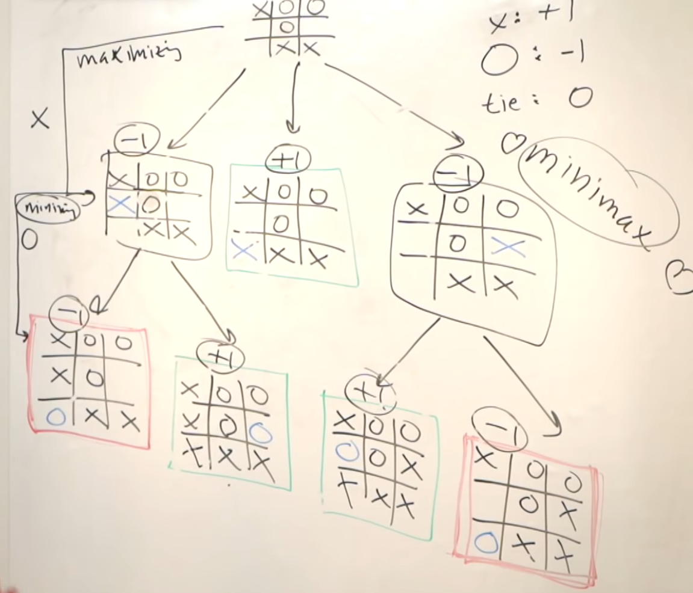

Tic tac Toe, jogo da velha ou jogo do galgo
Em teoria da decisão, o minimax (ou minmax) é um método para minimizar a possível perda máxima. Pode ser considerado como a maximização do ganho mínimo (maximin). Começa-se com dois jogadores 0-0 da teoria dos jogos, cobrindo ambos os casos em que os jogadores tomam caminhos alternados (por rodadas) ou simultaneamente. Pode-se estender o conceito para jogos mais complexos e para tomada de decisão na presença de incertezas. Nesse caso, não existe outro jogador, as consequências das decisões dependem de fatores desconhecidos.
Jogo da velha
Uma versão simples do algoritmo minimax lida com jogos como o jogo da velha, no qual cada jogador pode ganhar, perder ou empatar. Se o jogador A pode vencer com um movimento, esse é o seu melhor movimento. Se o jogador B identifica que um movimento levará a uma situação em que o adversário pode ganhar no próximo movimento, e que existe outro movimento que poderá levar a uma situação em que o adversário pode, no máximo, empatar, então, este último é o melhor movimento para ele. Após algumas rodadas, é fácil identificar qual é o melhor movimento. O algoritmo minimax ajuda a encontrar a melhor jogada, ao se caminhar pelas opções válidas, a partir do fim do jogo. A cada passo, assume-se que o jogador maximizador está tentando maximizar as suas chances de ganhar, enquanto na próxima rodada o jogador minimizador está tentando minimizar as chances de isso acontecer (maximizando as chances de que ele próprio ganhe). O maximizador precisa escolher uma jogada que tem a maior dentre as menores pontuações que o minimizador pode fazer aquele ter.
Desempenho e otimizações
O algorítimo mimimax no Jogo da Velha(ou em outros tipos de jogos) pode fazer muito processamento, o que pode fazer o algorítimo ser lento, por isso, deve ser importante fazer-se otimizações para que ele seja efetuado de forma rápida durante a execução do jogo. Para isso pode ser usado por exemplo a Poda alfa-beta. Também pode ser importante, principalmente em dispositivos com baixo poder de processamento como celulares, ou até em dispositivos mais potentes, que os códigos sejam otimizados para evitar-se gastos com processamento e tempo desnecessários pois como esse algoritmo faz muito processamento, principalmente nas análises das primeiras partidas, tais gastos podem ser muito aumentados e causarem um grande impacto na queda de desempenho.
Algoritmo
O algoritmo minimax com limite de profundidade (usando uma heurística para terminar o vasculhamento após uma dada profundidade) é mostrado abaixo, em pseudocódigo.
ROTINA minimax(nó, profundidade, maximizador)
SE nó é um nó terminal OU profundidade = 0 ENTÃO
RETORNE o valor da heurística do nó
SENÃO SE maximizador é FALSE ENTÃO
α ← +∞
PARA CADA filho DE nó
α ← min(α, minimax(filho, profundidade-1,true))
FIM PARA
RETORNE α
SENÃO
//Maximizador
α ← -∞
//Escolher a maior dentre as perdas causadas pelo minimizador
PARA CADA filho DE nó
α ← max(α, minimax(filho, profundidade-1,false))
FIM PARA
RETORNE α
FIM SE
FIM ROTINA
